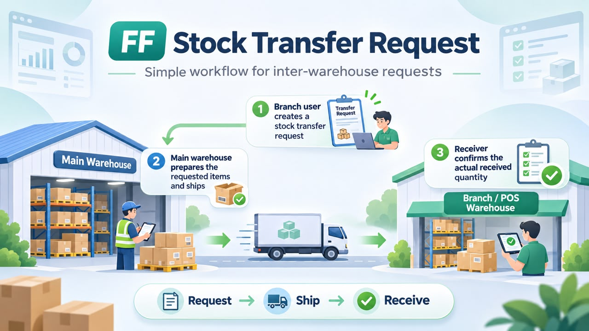

FF Stock Transfer Request
Controlled inter-warehouse replenishment requests for Odoo 20 Community
دورة واضحة لطلب النقل من الفرع، التجهيز من المخزن الرئيسي، ثم الشحن والاستلام الفعلي.
Request
Create a request with products, quantities, source warehouse, and destination warehouse.
Ship
Warehouse officers prepare a native Odoo shipment and record the actual shipped quantity.
Receive
Receiving users confirm the real received quantity and keep the request traceable.
Key capabilities
- Native Odoo pickings, moves, reservations, transit locations, returns, and traceability.
- Actual shipped/received quantities and net receipt after returns.
- Stock Operations smart tab showing all linked shipment, receipt, and return pickings.
- Manual and scheduled reorder creation with draft-only safety.
- Dedicated module roles separated from standard Inventory permissions.
- Company and warehouse authorization enforced server-side.
- Arabic translations included for workflow, menus, statuses, fields, and security roles.
Installation
- Install Odoo 20 Community with
stock, sale_stock, and mail.
- Install Stock Transfer Requests from Apps.
- Configure the main source warehouse in Inventory settings.
- Set the user's Default Warehouse and assign the appropriate transfer-request role.
Security model
Transfer-request roles are independent from Odoo's standard Inventory roles. The workflow exposes only the controlled request operations needed by each role; it does not grant unrestricted access to Inventory menus or arbitrary stock operations.
ملاحظات مهمة
- إعادة الطلب تنشئ طلبًا مسودة للمراجعة ولا تشحن المخزون تلقائيًا.
- الأصناف التي تحتاج أرقام تشغيلات أو أرقامًا تسلسلية تُستكمل من شاشة التحويل القياسية في أودو.
- يجب اختبار المستودعات والصلاحيات على قاعدة تجريبية قبل التشغيل الفعلي.
Odoo 20 Community · LGPL-3 · Flous Flow · flousflow.com